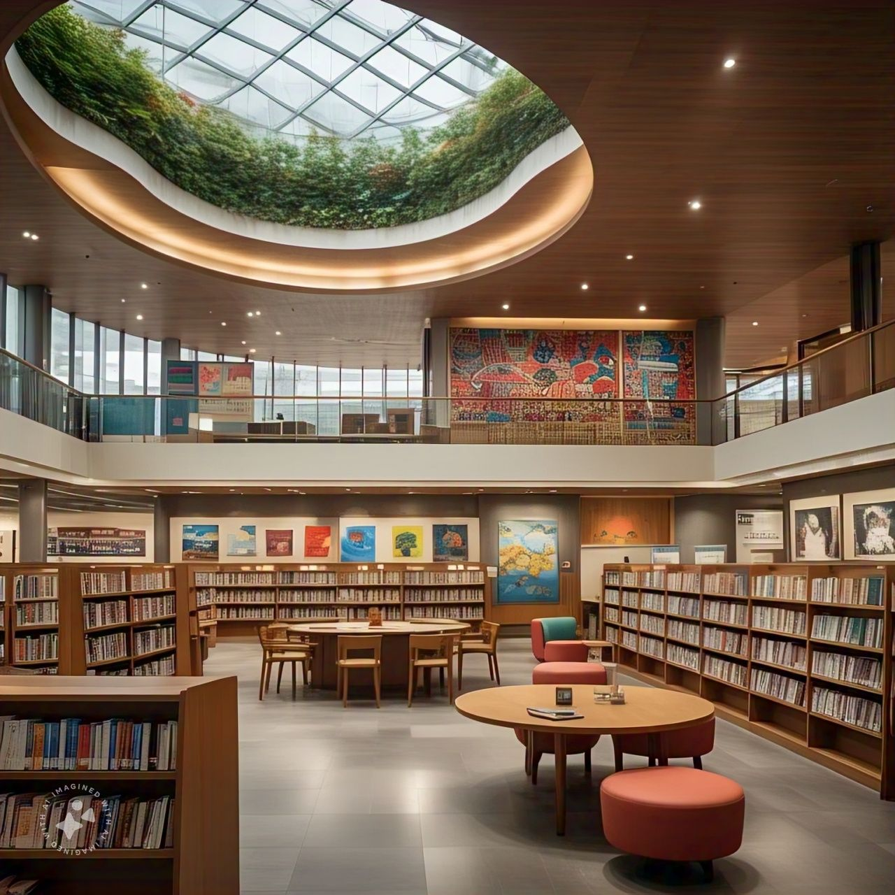

📚 BERANDA
LANGKAH-LANGKAH MENGGUNAKAN WEBSITE PERPUSTAKAAN DIGITAL

HALAMAN LOGIN
- Buka Halaman Website
- Masukan Username dan Passwoard
- Klik Tombol Login
- Setelah login berhasil,anda di arahkan ke halaman utama
PROFIL
- Klik Menu Profil
- Informasi yang Ditampilkan
- Deskripsi Website perpustakaan
MENU KOLEKSI BUKU
- Klik Menu Koleksi Buku di navigasi
- Anda akan Memilihat daftar buku yang tersedia di perpustakaan
- fitur tambahan:
Cari Buku: Ketikkan nama buku atau kategori untuk mencari
Detail Buku: Klik salah satu Buku untuk Melihat deskripsi
TRANSAKSI
- Klik Menu Transaksi
- Anda akan melihat from Transaksi:
isi Username,Passwoard,Alamat,Nana Buku, dan Jumlah
klik tombol simpan untuk menambah transaksi